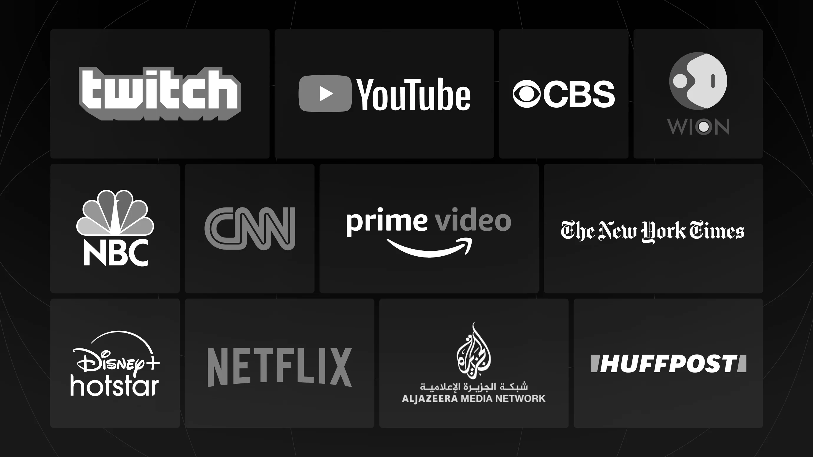
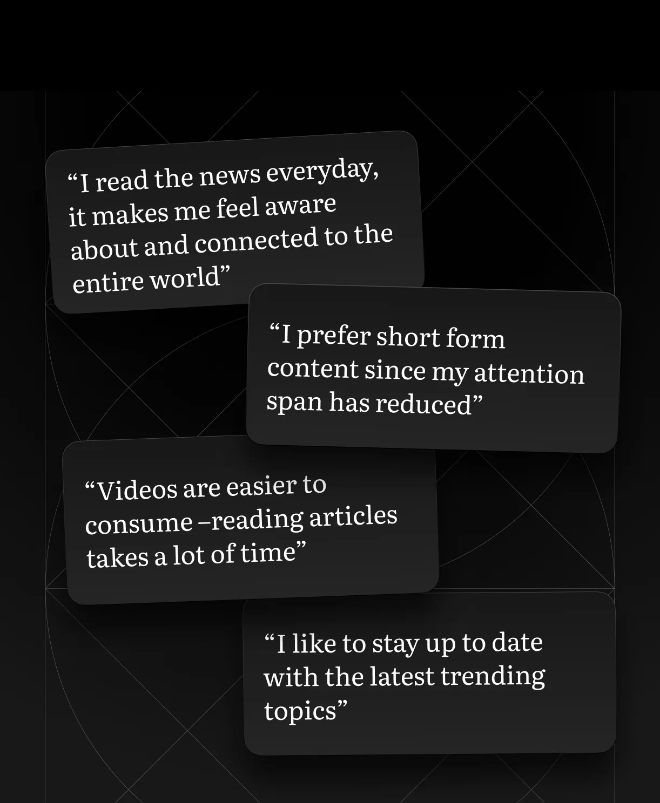
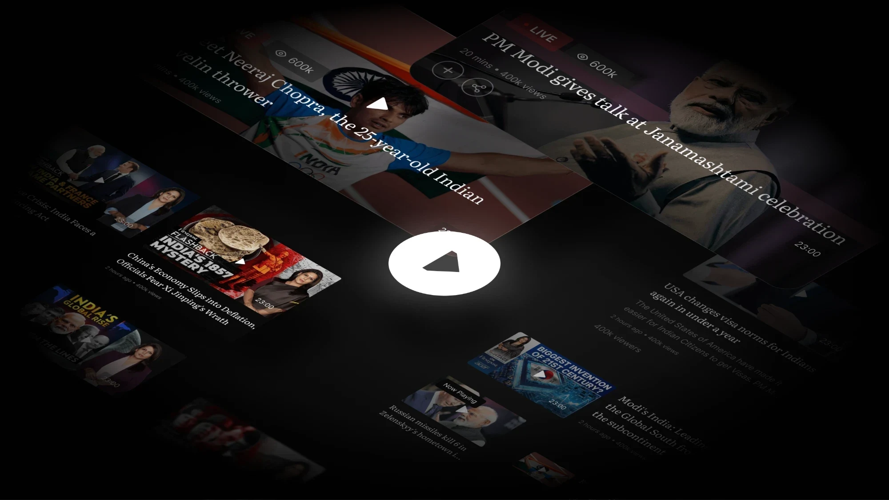
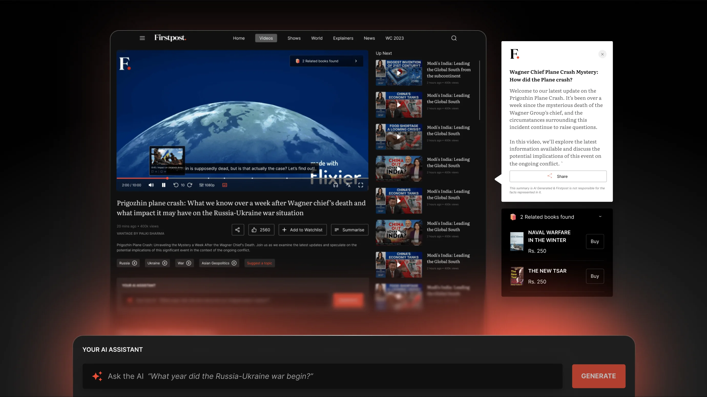
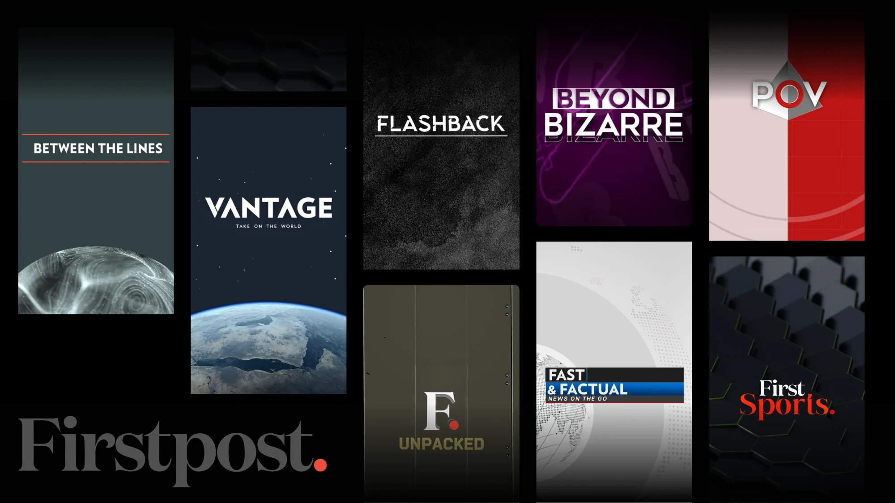
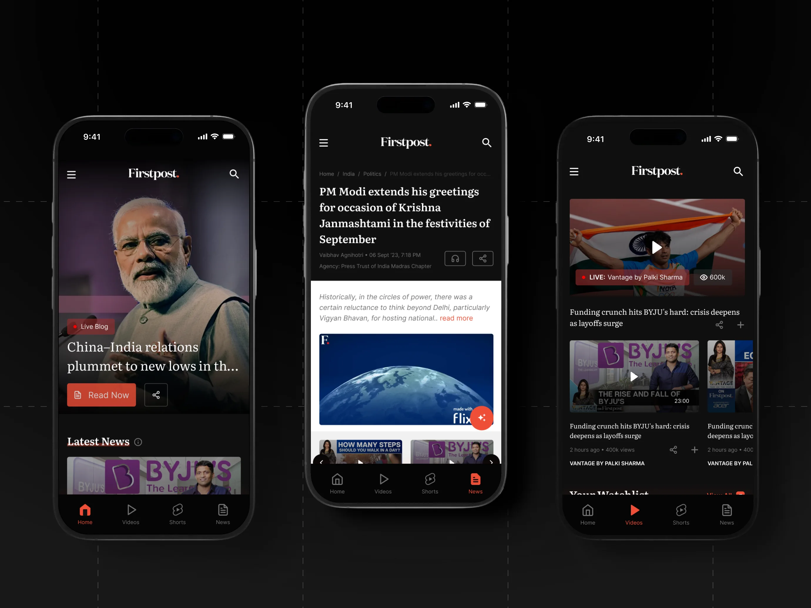
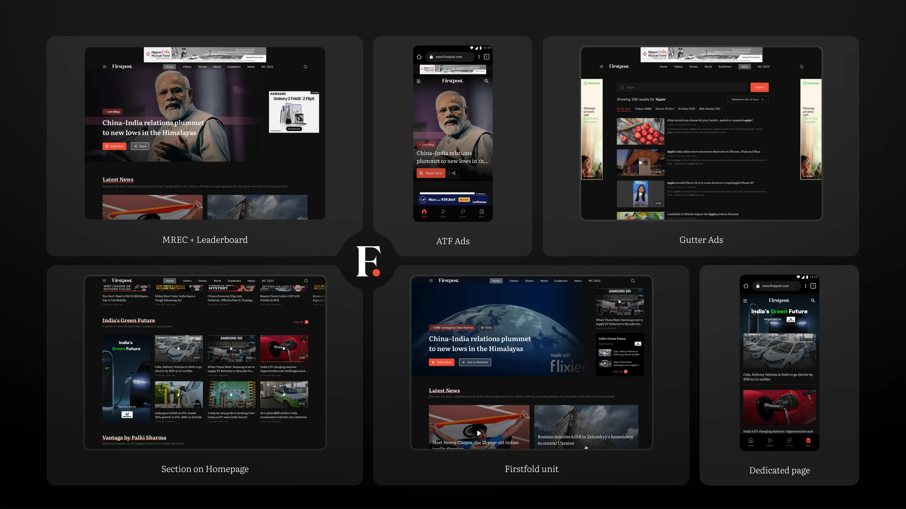
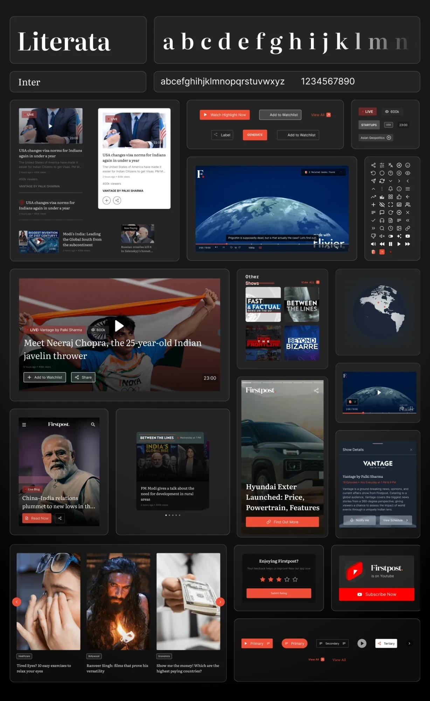
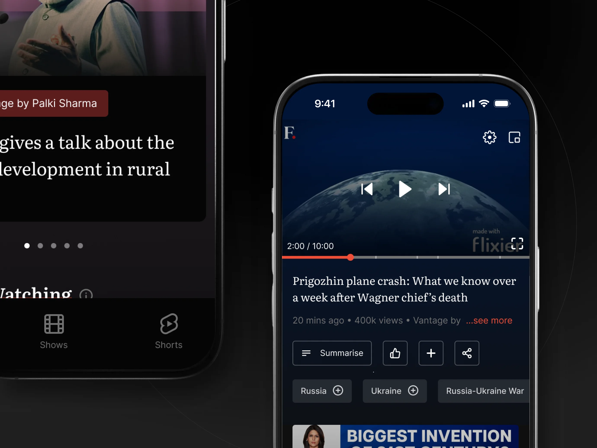

Firstpost
News, but make it video first. How we helped Firstpost pivot their content and business strategy
2x
Website traffic
30%
increase in average session duration
40%
reduction in page load time across the website
2x
Increase in revenue
- Status
- Finished
- Deliverables
- Website and phase 1 of Mobile Application
- Duration
- 7 months
- Year
- 2023
- Project scope
- Research
- Product strategy
- Design system
Firstpost is a news company under the Network 18 group, and we helped them with a design overhaul of their website and creation of their first mobile app with a significant pivot for their business and content strategy.
THE BRIEF
Firstpost is a news company under the Network 18 group, and we helped them with a design overhaul of their website and creation of their first mobile app with a significant pivot for their business and content strategy.
Understanding the Landscape
Considering how different the vision was from the existing product, understanding both, the industry incumbents and user behaviours, formed important cornerstones of our design process.
What does a video platform look and feel like?
We explored several video-first platforms, alongside a selection of news competitors. It helped us understand how the industry is serving videos to viewers and benchmark our product’s experience.
As an example, a common trend that was evident across video-platforms was the use of dark background colours to ensure the viewer focus on the video itself.

How do people consume information in 2023?

We conducted user interviews to get insights into the consumption patterns, behaviours and motivations of users have when it comes to consuming news as well as media consumption.
After the interviews, we bucketed our users into three types on the basis of factors like - their frequency of consumption, preferred source of information, their rewards from staying informed and daily routine.
A Video First Platform
From the very get-go, we were determined to design for a video-first news website. With the content strategy pivot at play, we wanted to aid with design. All our design decisions revolved around the video aspect of the entire Firstpost 2.0 plan - ranging from the dark theme to the hover experience. The challenge here was to design an experience that fulfilled the expectations set by other players but took a step forward at the same time.
After designing a base experience, we conducted design workshops with the product team to explore different directions the experience could take. As an outcome, we were able to create an innovative experience for viewers that was unique to Firstpost. We were also able to explore different avenues of monetisation for the business from these workshops.

Creating Firstpost’s Video Experience
The challenge here was to design an experience that fulfilled the expectations set by other players but took a step forward at the same time.
After designing a base experience, we conducted design workshops with the product team to explore different directions the experience could take. As an outcome, we were able to create an innovative experience for viewers that was unique to Firstpost. We were also able to explore different avenues of monetisation for the business from these workshops.

Rebranding Firstpost’s shows
All the Firstpost shows were rebranded to have a fresh and modern feel to them and match the visual style defined for Firstpost 2.0

Mobile First Approach
With 85% of the users accessing Firstpost’s website on their phones and only 15% use it on desktop, a trend concurrent with our times, the mobile web experience became a central point of focus for us.

Designing for Business
Since ads on the website were a primary channel of monetisation, we designed the UI keeping business objectives in mind. Additionally, we also designed for sponsored content on the platform.

A scalable Design System across platforms
Built today, for the future. Our robust design system was built around Firstpost being a video-first platform and was structured to cater to MWeb, Desktop and the Mobile App. The system ranges all the way from type and colour styles to the video player components. It was designed to cater to the product roadmap for the coming year.

The Firstpost App
We also worked on creating the foundation for their first mobile app, keeping in mind the significant pivot for their business and content strategy along with the identified user types

Overall Impact by Design
All of these improvements and enhancements helped us get buy-ins from all our stakeholders and ended with a drastic improvement in how Firstpost will be perceived in the world. After all, it all began with setting it up to be, “India’s take on the world!”
Scroll either screen to read further down the page.
“Working with Rahul and team has been an absolute pleasure! Their attention to detail, creativity, and dedication have truly transformed our website into a masterpiece. From the intuitive user interface to the visually stunning layouts, every element reflects their incredible talent and commitment to excellence. Not only did they bring our vision to life, but they also exceeded our expectations in every way.
Their ability to understand our goals and translate them into a seamless online experience is commendable. The website they’ve designed not only captures the essence of our brand but also resonates with our target audience, resulting in increased engagement and satisfaction. Their professionalism and responsiveness throughout the entire process have made collaboration effortless.
They were always willing to listen to feedback, incorporate changes, and offer valuable insights to enhance the overall design. I couldn’t be happier with the outcome and look forward to continuing our partnership on future projects. Thank you to the entire team for their exceptional work and dedication!”